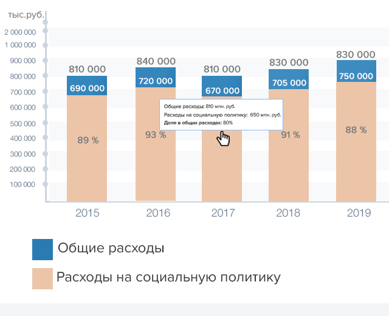

- Обращение руководителя
- О бюджете
- Брошюра "Бюджет для граждан"
- Планирование бюджета
- Исполнение бюджета
- Государственные программы
- Государственный долг
- Социально-экономическое развитие
- Межбюджетные отношения
- Финансовый контроль
- Общественное участие
- Финансово-хозяйственная деятельность
- Новости
- Контакты
- Карта сайта
Финансово-хозяйственная деятельность
Хозяйственная деятельность предприятия - это деятельность по производству продукции, оказанию услуг, выполнению различных работ, направленная на получение прибыли с целью удовлетворения экономических и социальных интересов собственников и трудового коллектива предприятия.федеральном бюджете на определенный срок под очень низкие проценты.
Исполнение плана финансово-хозяйственной деятельности бюджетных и автономных учреждений
Данные на 01.07.2017
Доходы учреждений по состоянию на 01.06.2017
Доходы учреждений по состоянию на 01.06.2017


Комитет финансов Волгоградской области
400066, Волгоград, ул. Порт-Саида, 7
телефон: (8442) 30 91 06
факс: (8442) 38 58 91
Мы в социальных сетях: